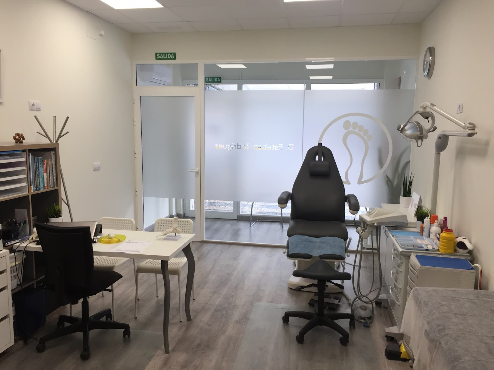
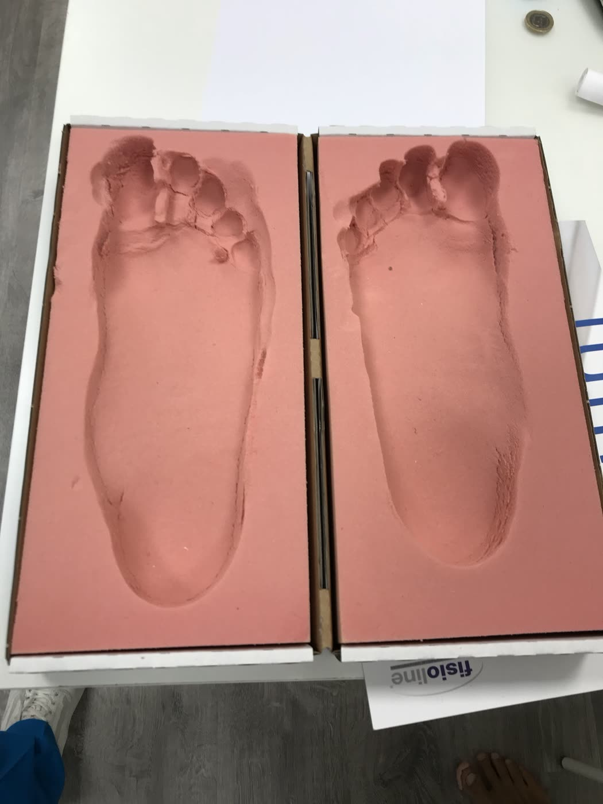
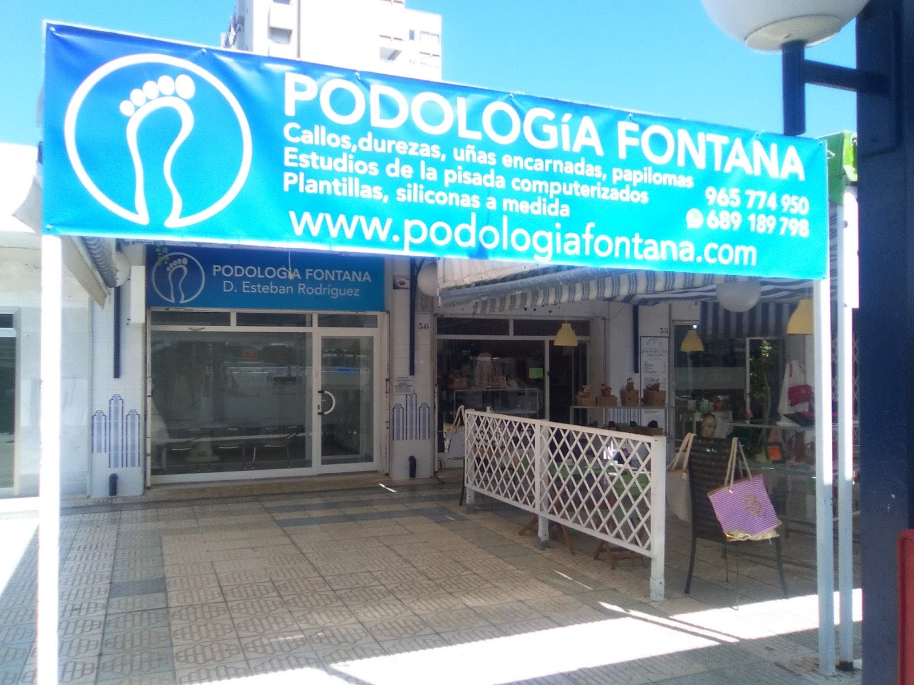

“Hoy me han adelantado la cita por una urgencia, me han abierto un hueco en su agenda, no es la primera vez que vengo y la excelencia profesional de Esteban hace esta podología un 10/10”
Podólogo en Playa de San Juan, Alicante
Podología Fontana
Callos, durezas, uñas encarnadas y papilomas. Estudio computerizado de la pisada, plantillas y siliconas a medida. Esteban Rodríguez, podólogo, en el Centro Comercial Fontana.
4,7 en Google · 121 reseñas
La consulta, en el local 37 del Centro Comercial Fontana.
Una consulta de podología en Playa de San Juan con reseñas en Google desde hace ocho años. Lo que más repiten sus pacientes: puntualidad, limpieza y que Esteban explica lo que tienes y lo que va a hacer.
Estudio de la pisada
Cada pie deja una huella distinta.
El estudio computerizado de la pisada mide cómo apoyas y cómo caminas, y de ahí sale la plantilla: una para cada pie, no una talla para todos. Sirve para dolores de pie, de rodilla o de espalda que empiezan en cómo pisas, y para deportistas.
En la foto, la impresión de dos pies antes de fabricar sus plantillas.
Cita para un estudio de la pisada
Plantillas y siliconas a medida
De la huella a la plantilla.
Plantillas hechas para tu pie, a partir de tu estudio y tu impresión, y siliconas a medida para dedos y zonas de apoyo. Se revisan una vez puestas, con tu calzado.
Preguntar por unas plantillasCómo se hace una plantilla a medidaPor pasos
1
ExploraciónSe mira el pie, el calzado y qué te duele.
2
Estudio computerizado de la pisadaCómo apoyas, parado y andando.
3
Impresión del pieLa huella en espuma, como la de la foto.
4
Plantilla a medida y revisiónSe fabrica para tu pie y se comprueba con tu zapato.
Orden orientativo. Lo que toca en cada caso lo decide el podólogo en consulta.
La consulta
En el Centro Comercial Fontana.
Esteban Rodríguez, podólogo, y Laura en recepción. Un local a pie de calle en el centro comercial y una consulta que sus pacientes describen como impecable.
Centro del cuadro médico de Caser.
Cómo llegar
Servicios
Lo que se trata en consulta.
Pulsa el que te interese y escríbenos.
Callos y durezas
Quiropodia: se eliminan y se busca por qué salen.
Uñas encarnadas
Tratamiento y corte correcto para que no vuelva.
Papilomas
Verrugas plantares.
Estudio computerizado de la pisada
Cómo apoyas y cómo andas.
Plantillas a medida
A partir de tu estudio y tu impresión.
Siliconas a medida
Para dedos y zonas de apoyo.
Lo que dicen sus pacientes
121 reseñas en Google.
Una nota media de 4,7. Estas son tres, tal cual las escribieron.
“Esteban y todo su equipo son excelentes profesionales y mejor personas si cabe. Siempre te atienden con una sonrisa y mucha amabilidad. La clínica impecable. Desde luego siempre la recomiendo y cuando prueban quedan encantados.”
“Acudo a esta clínica desde septiembre y a través de Esteban he conocido la excelencia profesional. Desde el primer momento ha sabido dar solución a mis “complicaciones” desde la amabilidad y simpatía. 10 en profesionalidad, 10 en implicación, 10 en trato al cliente. A todo esto se le debe sumar la inmejorable colaboración de Laura que con su simpatía te facilita todo.”
Horario y contacto
Centro Comercial Fontana, local 37.
Horario
| Lunes | 10:00–14:00 · 17:00–20:30 |
| Martes | 10:00–14:00 · 17:00–20:30 |
| Miércoles | 10:00–14:00 · 17:00–20:30 |
| Jueves | 17:00–20:30 |
| Viernes | 10:00–16:00 |
| Sábado | Cerrado |
| Domingo | Cerrado |
Contacto
- Centro Comercial Fontana, local 37
Av. Santander, 17 · 03540 Playa de San Juan, Alicante - 965 774 950 · 689 189 798
- Pedir cita por WhatsApp
- Con cita. Centro del cuadro médico de Caser.
El mapa es de Google y usa sus cookies. Se carga solo si lo pides.
Cita
Cuéntanos qué te pasa en el pie.
Escribe por WhatsApp o llama en horario de consulta, y te damos hora.